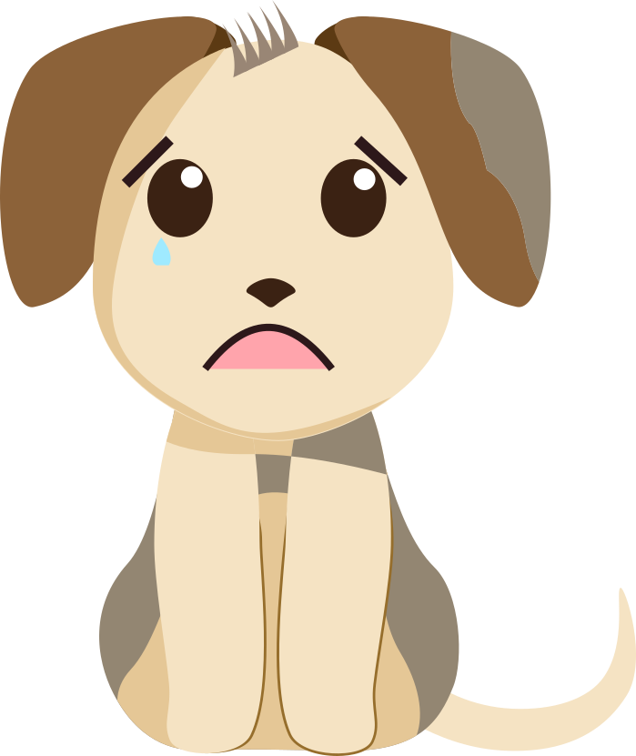
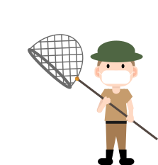
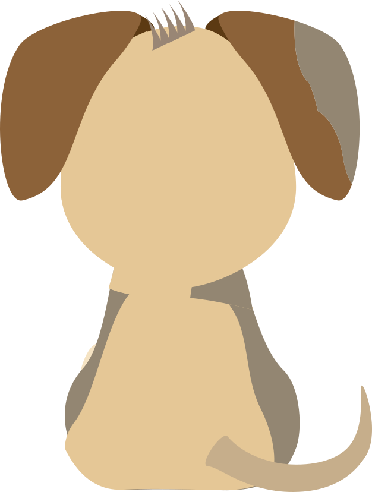

浪狗：嗷嗚嗚嗚嗚嗚，嗷嗚～
浪人：小流浪狗啊，你怎麼哭得這麼傷心？

浪狗：今天是我在這等待主人回來接我的第49天。
浪人：49天！？等了這麼久的時間，你還是別等啦！
浪狗：曾經我也是個備受呵護的小王子，我的主人是一對情侶，總是給我吃上好的罐罐，帶我去美容院洗香香。
浪人：那你怎麼會變成現在這副樣子呢？
浪人：甚麼！？居然是這樣子，真是太不負責任了！
這些日子裡我總在半夜邊哭邊問月亮，是不是我不乖，所以主人不要我......
捕狗隊：就是牠！居民舉報的流浪狗！快抓住牠！把牠帶回收容所！

浪狗：嗚嗚～（害怕哀號）
浪人：等等！你們做什麼！把牠抓到收容所，牠會怎麼樣？
浪人：怎麼可以這樣！這樣太不公平了！你們別抓牠！牠是我的朋友，以後都由我來照顧！
捕狗隊：好吧！既然你願意負責，那就交給你了
(捕狗隊離去...)
浪狗：謝謝你救了我。
浪人：不用客氣，既然都是流浪，你就跟著我一起吧 ，我們互相陪伴！那就叫你拉拉吧！

